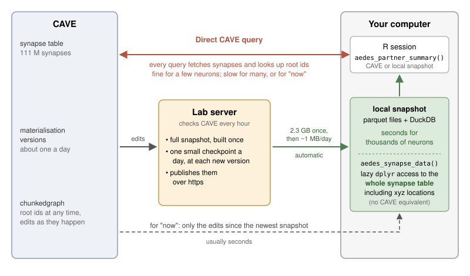
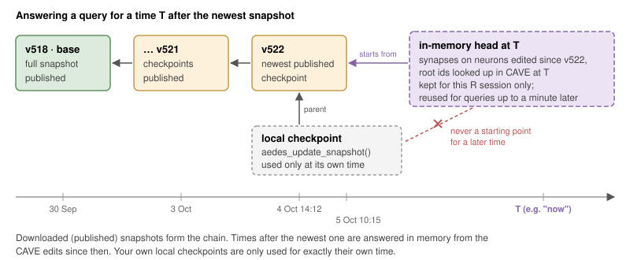
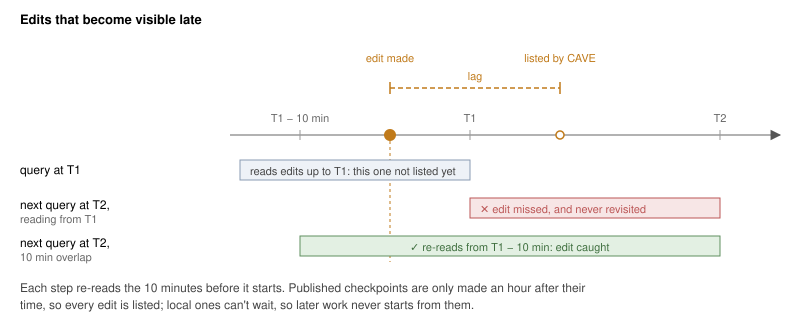
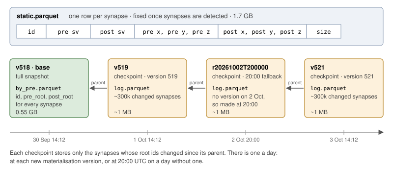
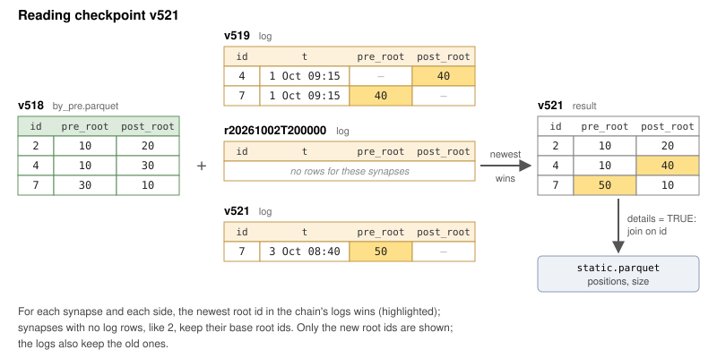

This vignette explains how to use a local copy of the Aedes synapse table to enable connectivity queries that can reflect edits up to the latest second but are still very fast (think one second to find the partners of hundreds of neurons vs 5 minutes via CAVE). The catch is a one time download of about 2 GB of data onto the user’s machine. You also have access to the full synapse table including the location of every synapse.
Quick Start
If you have access to the aedes CAVE datastack:
library(aedes)
aedes_use_snapshot()
aedes_set_version('now')
dn.now <- aedes_partner_summary("superclass:descending_neuron", partners = "inputs")
aedes_set_version('latest')
dn.lat <- aedes_partner_summary("superclass:descending_neuron", partners = "inputs")The first time, aedes_use_snapshot() offers to download
a snapshot (consisting of about 1.5 GB of static synapse data (e.g. XYZ
locations) that never changes and 0.5 GB of materialisation information
that matches each row of that synapse table to current root_ids). After
that, new checkpoints (a few MB) are downloaded automatically every day
when you use the snapshot and deltas up to the current time can be
computed on your machine. Collectively this allows rapid time travel to
arbitrary timepoints in the evolving connectome connectivity graph. In
particular this allows users to access both the latest CAVE
materialisation version (e.g. 519) and the current time
("now") for up-to-the-second queries. We find this very
useful during simultaneous proofreading and typing.
Key Points
- Snapshots are made on a lab server and downloaded automatically: one full base, plus a small checkpoint each day at each materialisation version.
- For
"now", or any time after the latest snapshot, aedes fetches the edits made since that snapshot from CAVE. The result is kept in memory for the rest of the R session, so only the first query is slow. Nothing is written to disk. - Root ids only make sense at one time, so fix the time once
(
now <- Sys.time()) and use it for every call in an analysis block. - Each materialisation version has its own snapshot
(e.g.
v519), so repeating an analysis at a version needs no CAVE lookups.
Read on for more details, and see Handling recent edits for how times after the newest snapshot work.
Introduction

The Aedes synapse table has about 111 million synapses. Querying it through CAVE is fine for a few neurons, but it is slow for tens to thousands of neurons, especially at the latest state of the dataset. A local synapse snapshot is a copy of the whole table as parquet files, which aedes queries with DuckDB. This gives you:
- fast queries for the latest state of the dataset (“now”). Only the edits made since the snapshot are fetched from CAVE, so you can work with up to date connectivity for large numbers of neurons. This is impractical with live CAVE queries.
- fast partner summaries. Thousands of neurons take seconds.
-
the full synapse table, including the positions of
the pre and postsynaptic points and the synapse size, for your own dplyr
queries with
aedes_synapse_data(). This is only possible with a snapshot; there is no equivalent CAVE query. - a fast local cache of a materialisation version. CAVE (via the chunkedgraph) already lets you go back to any time; a snapshot makes repeating an analysis at one particular version fast.
Vocabulary
| Term | Meaning |
|---|---|
| synapse table | the CAVE table with every synapse in the dataset |
| static data | the columns of the synapse table that never change: synapse id, pre
and postsynaptic supervoxels, positions and size
(static.parquet, 1.7 GB) |
| snapshot | the root ids of both partners of every synapse at one moment in
time, named by a tag such as v518
|
| base | a full snapshot (0.55 GB), usually at a CAVE materialisation version |
| checkpoint | a snapshot stored as just the synapses whose root ids changed since an earlier snapshot, its parent (about 1 MB per day of edits) |
Who Does What
Most people only use snapshots:
-
download them with
aedes_download_snapshot() -
use them with
aedes_use_snapshot(),aedes_partner_summary()andaedes_synapse_data() -
update them to a later time with
aedes_update_snapshot()(or just download again)
Someone looking after the snapshots (for now on a lab server) does the rest:
-
build the static data and a first base with
aedes_build_snapshot() -
make daily checkpoints and occasional new bases
with a cron job (
inst/scripts/synsnap-cron.sh) -
distribute them with
aedes_publish_snapshot()
Using a Snapshot
You select a snapshot once per session. The snapshot folder is found
by aedes_snapshot_root().
library(aedes)
library(dplyr)
aedes_use_snapshot()
#> Using synapse snapshot '20261001T200000' (2026-10-01 20:00:00 UTC)aedes_use_snapshot() respects the version you have
chosen for other aedes functions (see aedes_set_version()).
By default this is "now" (the package says so when it
loads), so you get the newest snapshot, which is then brought up to the
present on the fly. With aedes_set_version("latest") you
get the snapshot made at the newest CAVE materialisation version
instead. You can also ask for a specific version or
timestamp; this also changes the default for the other
aedes functions so that metadata and connectivity match.
aedes_use_snapshot(timestamp = "now")
aedes_use_snapshot(version = 513)Partner summaries are now answered locally:
aedes_partner_summary("superclass:descending_neuron", partners = "inputs")You can ask about later times than the snapshot, including
timestamp = "now". In this case
aedes_partner_summary() fetches just the edits made since
the newest snapshot from CAVE and looks up new root ids for the synapses
that they affect. The update is kept for the rest of the session, so
only the first query after a long gap is slow.
aedes_partner_summary("superclass:descending_neuron", partners = "inputs",
timestamp = "now")For anything else, aedes_synapse_data() gives you a lazy
table of every synapse that works with dplyr verbs. Unlike
aedes_partner_summary(), which falls back to CAVE, it needs
a local snapshot. Nothing is actually read until you
collect() the result. For example to count the inputs onto
descending neurons by presynaptic partner:
dns <- aedes_ids("superclass:descending_neuron")
aedes_synapse_data("post") %>%
filter(post_root %in% dns) %>%
count(pre_root, sort = TRUE) %>%
collect()Root ids come back as integer64 columns, but you can
filter with the character ids that aedes_ids() returns.
With details = TRUE the table also has supervoxel ids, the
positions of the pre and postsynaptic points and the synapse size.
Synapses at a Particular Time
By default aedes_synapse_data() reads the selected
snapshot exactly as it is. To get the synapses at another time, give
timestamp. This works just like
aedes_partner_summary(): the edits since the newest
snapshot are looked up in CAVE and kept in memory. So the result only
works in the current R session; collect() it there.
Root ids only mean something at one time, so look up the neurons you are interested in at the same time as the synapses. Fixing the time once makes sure that they match:
Repeating an Analysis at a Materialisation Version
Each materialisation version has its own snapshot, named
v<version>. You can repeat an analysis at that
version exactly, with no CAVE lookups for the synapses:
Synapse Positions
With details = TRUE you can get the location and size of
each synapse. For example, here are the output synapses of one
descending neuron, placed midway between the pre and postsynaptic points
(in raw voxel coordinates):
Comparing Two Times
Synapse ids never change, so you can join snapshots from different
times by id. For example, this finds the input synapses
onto descending neurons whose presynaptic neuron has been edited since
version 519:
old <- aedes_synapse_data(snapshot = "v519") %>%
select(id, old_pre = pre_root)
aedes_synapse_data("post", timestamp = now) %>%
filter(post_root %in% dns) %>%
inner_join(old, by = "id") %>%
filter(pre_root != old_pre) %>%
count(pre_root, sort = TRUE) %>%
collect()A new root id means the neuron was edited, not necessarily that the synapse now belongs to a different neuron.
Getting a Snapshot
aedes_download_snapshot() reads a
manifest.json from the server where the snapshots are
published (working out its address needs access to the aedes CAVE
datastack) and downloads any snapshots that you don’t have yet, into
aedes_snapshot_root(). Every file is checked against its
md5 and the download resumes after an interruption, so if anything goes
wrong just run it again. Snapshots never change once made, so a later
download only fetches new ones: normally a few small checkpoints, and
occasionally a new base.
aedes_use_snapshot() and queries for times after the
chosen snapshot check for new checkpoints at most every 6 hours (set the
aedes.snapshot_check_hours option to change this, or
Inf to turn it off) and download them quietly. Failures are
only reported once they have lasted a day.
You rarely need to make a snapshot yourself, since queries for later
times work without one. But you can keep the synapses at one time on
disk for later sessions (e.g. the now of an analysis you
want to repeat):
aedes_update_snapshot()
#> Updating synapse snapshot 'v518' (2026-09-30 14:12:29 UTC) to
#> 2026-10-01 12:00:00 UTC (now)This writes a local checkpoint, which takes seconds to minutes. Use
aedes_update_snapshot("latest") for the time of the newest
materialisation version instead. A local checkpoint is only used when
you ask for exactly its time (see Handling recent edits).
Handling recent edits
You don’t need this section to use snapshots, but it explains what happens for times after the newest snapshot.
Times After the Newest Snapshot
For a time after the newest snapshot, aedes starts from the newest published snapshot and makes a small table in memory of the synapses on neurons edited since then, with their root ids at that time. Together these give the synapses at that time.

aedes_partner_summary() keeps one of these tables and
moves it forward with each later query, so it only fetches the edits
since the last one. aedes_synapse_data(timestamp =) keeps
one table for each time you ask for. These never change, so a lazy table
gives the same answer whenever you collect() it, but each
new time (more than a minute after the last one, the
aedes.synapse_max_age option) adds another table to the
session.
Local checkpoints made with aedes_update_snapshot() are
only used for exactly their own time. Later times always start from a
published snapshot, for the reason below.
Edits That Become Visible Late
CAVE lists each edit with the time it was made, but it can take a little while (usually seconds, occasionally minutes) before the edit is listed. So reading the edits up to a very recent time can miss some, and anything that started from that point would go on missing them.

aedes avoids this in three ways:
- the lab server only makes a checkpoint an hour after its time, by which point every edit has been listed
- every update re-reads the edits from 10 minutes before the time it starts from, and edits read too soon are read again by the next query
- local checkpoints can’t wait an hour, so they are never used as a starting point
Building and Publishing Snapshots
This section is for whoever looks after the snapshots.
aedes_build_snapshot() builds everything from scratch:
This does two things:
- downloads the source edgelist behind the CAVE synapse table (22 GB),
checks its md5 and converts it to
static.parquet. The file is found from the description of the CAVE table, so you need access to the aedes datastack. - looks up the root id of every supervoxel at the newest
materialisation version to make the first base,
e.g.
v518.
It takes a few hours and needs about 25 GB of free space while it
runs, but only 2.3 GB once it has finished. If you have the Google Cloud
CLI (gcloud) installed the download is quicker; otherwise
curl is used. If anything goes wrong just run it again with
the same version and it will carry on where it stopped.
Before a new base is used, the synapses of 20 neurons of very different
sizes are compared with a CAVE query at the same version. A snapshot
that fails this check is moved aside rather than used.
After that, inst/scripts/synsnap-cron.sh runs hourly
from cron. Each run makes any missing checkpoints from the past week:
one at the exact time of each materialisation version
(e.g. v519, at about 14:12 UTC), and one at 20:00 UTC on
any day without a version in the 24 hours before
(e.g. r20261002T200000), so there is about one a day. Each
is made once an hour has passed, so that all edits are visible. It then
publishes them (as aedes_publish_snapshot() does), hard
linking the static data, the base and every checkpoint built on it into
a folder served over https and writing manifest.json last.
Finally it writes a status.json and exits with an error, so
that cron sends an email, if anything failed or the newest snapshot is
more than 36 hours old. A run that fails or never happens is filled in
by the next one. The comments at the top of the script say how to set it
up.
Reading a checkpoint gets slower as its chain back to the base grows,
so every few months make a new base with
aedes_update_snapshot("latest", rebase = TRUE).
How It Works
Layout
A snapshot folder holds the static data and a small folder for each snapshot:
syn_snapshot/
static.parquet id, pre_sv, post_sv, positions, size 1.7 GB
static.json source table and md5
v518/ base
meta.json tag, timestamp
by_pre.parquet id, pre_root, post_root 0.55 GB
v519/ checkpoint at materialisation version 519
meta.json tag, timestamp, base = "v518", parent = "v518"
log.parquet id, t, new and old roots about 1 MB
r20261002T200000/ checkpoint at 20:00 (no version on 2 Oct)
meta.json tag, timestamp, base = "v518", parent = "v519"
log.parquet
v521/ checkpoint at materialisation version 521
meta.json tag, timestamp, base = "v518",
parent = "r20261002T200000"
log.parquet
The split follows how the data actually change. Supervoxels,
positions and sizes are fixed once synapses have been detected;
proofreading only changes which root id each supervoxel belongs to. So
each snapshot only stores the root ids of the two partners of each
synapse, and the static columns are joined on id when you
ask for them (details = TRUE).
by_pre.parquet is sorted by presynaptic root id. Parquet
files store the minimum and maximum of each column for each block of
rows (a row group), so DuckDB can skip most of the file when filtering
on a few pre_root values. An optional copy sorted by
postsynaptic root (by_post.parquet) speeds up input queries
for small numbers of neurons.
Checkpoints
A checkpoint records only the synapses whose root ids changed since its parent: for each one the new root id of each side that changed, and the old one. Its parent is the newest snapshot at or before its own time, so the checkpoints form a chain back to the base. Reading a checkpoint reads the base and the logs of every checkpoint in its chain, keeping the newest root id for each synapse (below). DuckDB does this in a fraction of a second for a few neurons even with months of daily logs.

Because each checkpoint only depends on its parent, missing ones are easy to deal with:
- a missed day just makes the next checkpoint a little bigger
- a checkpoint made later for an earlier time (e.g. a day that failed and was retried later) starts a side branch from the newest snapshot before it, without changing any existing checkpoint
- a checkpoint whose chain is incomplete (e.g. a parent that failed to download) is not listed, and running the download again fills it in
Safety
- snapshots are built in
.staging/and only moved into place once they are complete and have been checked -
meta.json(for each snapshot),static.jsonand the publishedmanifest.jsonare always the last files written - parquet files are written to a temporary name and then renamed, so a half-written file never looks finished
- the slow steps of a build (the download and the root id lookup, which is saved in chunks of a million supervoxels) and downloads can resume after a failure
Only one process should write to a snapshot folder at a time (the
cron job uses flock to make sure of this). Any number of R
sessions can read from it.
Comparison with the CAVE Delta Lake Export
The CAVE materialisation engine can now export a materialisation
version as a Delta Lake table (MaterializationEngine#220;
see the deltalake_query notebook in CAVEColab for an
example). Each version is a full copy of the synapse table, written once
for each indexed column (e.g. pre and postsynaptic root id, or position)
so that each copy is partitioned and sorted for queries on that column,
in files of about 256 MB with extra indexes (bloom filters) to skip
files quickly.
This makes it possible to query the export remotely: a client such as polars or DuckDB reads just the parts of the files it needs with HTTPS range requests, with no load on the CAVE server. This works well for a handful of neurons at a materialisation version, but gets slower when the synapses you want are spread across many files, and it can’t answer questions about the present (“now”).
| aedes snapshots | CAVE Delta Lake export | |
|---|---|---|
| Where queries run | locally, after a download | remotely (range reads) or locally |
| Up front | 1.7 GB static data once, plus a 0.55 GB base | nothing for remote queries |
| Times available | snapshot times, and “now” via CAVE edits | materialisation versions |
| Each new time | a checkpoint of about 1 MB per day of edits | a full copy of the table per version |
| Unchanged columns | stored once in static.parquet
|
rewritten with every version |
| Best for | many neurons, the latest state | a few neurons at a version, no setup |
Our approach depends on two features of the synapse table:
- updates are narrow. A day of proofreading edits a few hundred neurons. Many supervoxels then belong to new root ids, but only the synapses on those neurons change, a small fraction of the 111 million rows, and the static columns are never touched. So after a one-time download of the static data and a base, each new time costs a small checkpoint.
- there is a single writer. So the only guarantee we need is that readers never see a half-built snapshot, which staging plus a rename provides.
The result is a set of ordinary parquet files that DuckDB, arrow or pandas can read directly.